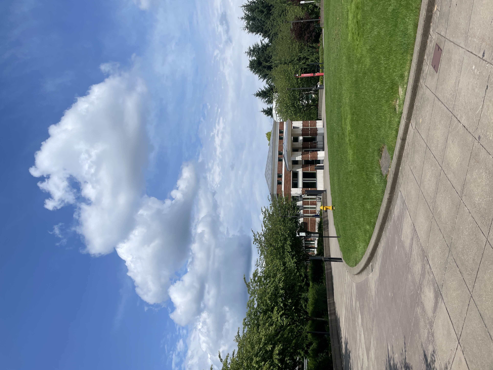
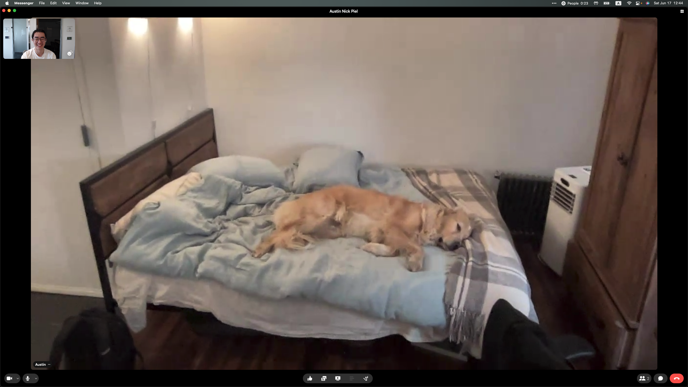
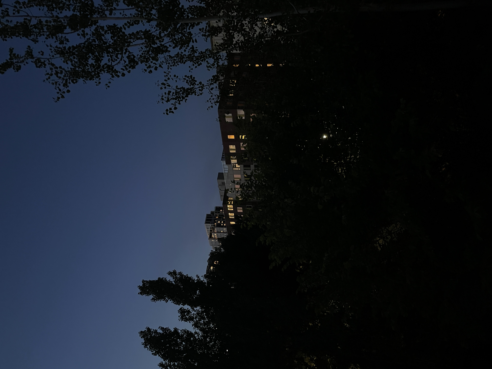
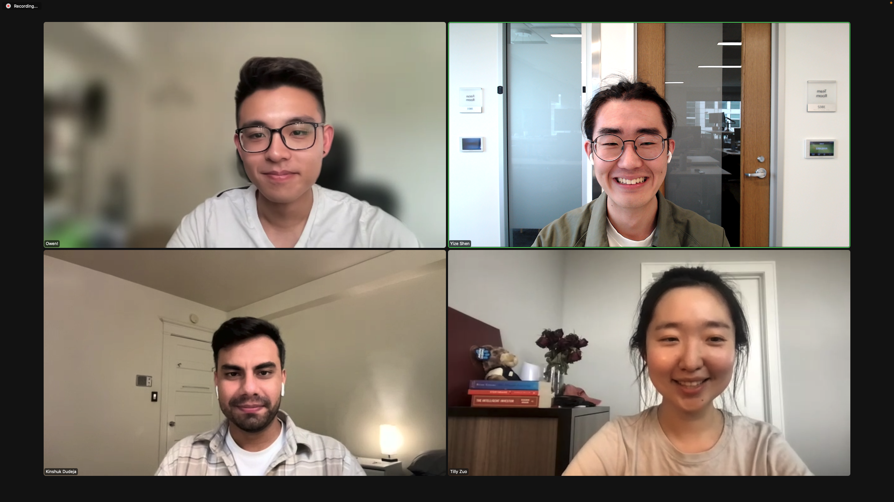
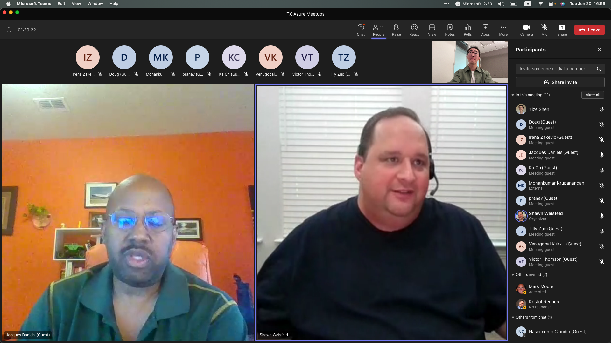

Ongoing Journey - June 2023
Taking a break
Sunny day at RedmondLaptop died last month, so did my blog github repo, took a while to get it back.
First time taking a break from writing since December 2022, felt a sense of relief? Blogging non-stop for the past 16 months, my mind went faster than what the body can take in, so it felt nice taking a break, taking slower steps, having some time to reflect.
Talking about taking a break, Redmond has finally took a break from cloudy days since last week. We got a 15 minutes break after the team wrapped up our meeting, right before I get up, my manager jumped out of her chair and ran outside. 5 seconds later, we see her outside running around in circle, both arms out, hugging the sun.
…
I am from California so was used to the sunny weather, but a similar feeling arose, do want myself to appreciate more, even the smallest moments in life :)
Leo really do know how to take a break :)宠辱不惊
placeholderKristof criticized me for sending a bad phase II documentation, the same afternoon someone wrote a shoutout on how I kept the database intacted in the student organization.
Felt surprised how the same feeling was evoked - this anxiety of wanting to be respected, on the right thing?
Kristof didn’t know it was the communication that errored, and the student org never realized my goal was to let everyone else to keep p@ in tacted.
想起了小时候学的宠辱不惊，称赞和贬低多源于误解，以后保持谦虚的沉默就行; 也想回了上个月想到的慎独，那些真正考验人的，反而是无人看见，无人喝彩的事情吧.
Take leads
first recording of product at cmu, thanks to these folksA rough podcast recording with product at CMU, reflecting back biggest reason was I never took intitative telling others what to do.
It was less about info sync, more so on taking charge. tilly and anna were not aligned on goals of recording. it’s my job to guide them through the process, telling them exactly what to do.
Our culture has become soft. Out of a fear of offending others, people are scared to direct others even when the situation calls for it.
People need leaders. Good leaders take charge when the people around them need them to. Otherwise, groups descend into inaction — just like they did at my photography session.
David perrel on being a leader, ironic how similar the situation I was in.
上善若水也许可以保护我，避免冲突，但团队需要一个有担当的领导者，关系需要一个负起责任的主心骨，只有确信与坚持，才是职业和勇气的表现吧.
Pitching
did a presentation of the product I worked withChatted with Tilly and Kristof and both mentioned idea pitching, Tilly with investors, Kristof on managers
Quite a weak spot of mine, recall the reserved culture I was in when growing up, phrases like 酒香不怕巷子深, I tend to feel reluctant speaking my thought.
Dad thought as long as one pitch with care and honesty, it’s simply another way to achieve non-zero sum game.
Who am I, what am I doing, what have I done, what’s my obstacle & what can you help, how you can aid if you can’t.
Kristof on pitching ideas.